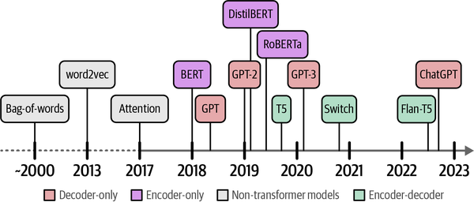
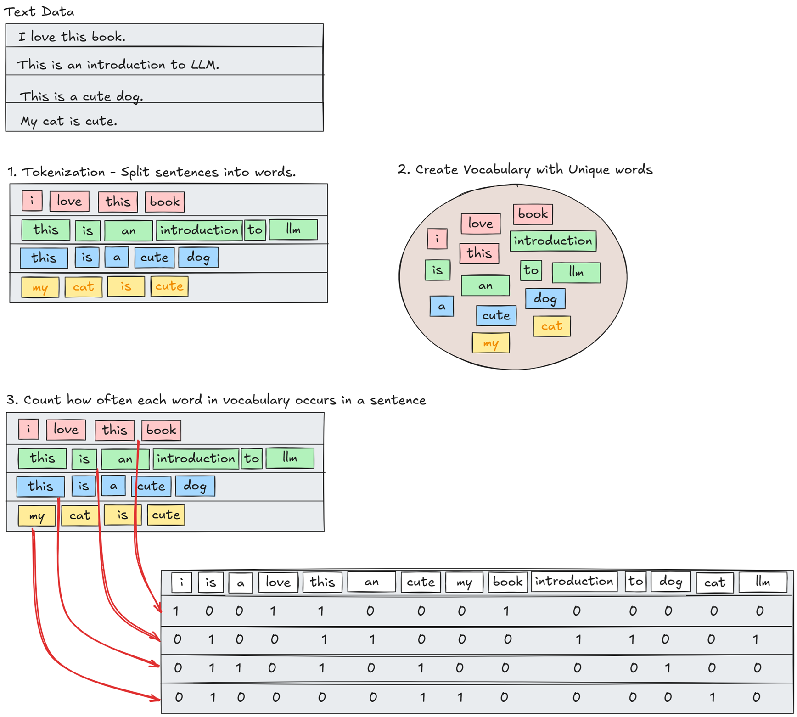
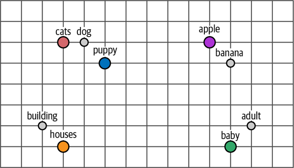

Introduction to Language AI & LLM
This notebook is heavily inspired from Chapter 1 - Hands-on LLM book by Jay Alammar and Maarten Grootendorst and also my notes on the chapter.
Language AI
Artificial Intelligence (AI) is often used to describe computer systems dedicated to performing tasks close to human intelligence, such as speech recognition, language translation, and visual perception.
Language AI refers to a subfield of AI that focuses on developing technologies capable of understanding, processing, and generating human language. It can be used interchangeably with Natural Language Processing.
History
Lot of research and development has happened in the field of Language AI aiming to represent and generate language. Below image shows those developments over the years.

Source: Chapter 1 - Hands-on LLMText is unstructured in nature and loses its meaning when represented by zeros and ones (individual characters). As a result, throughout the history of Language AI, there has been a large focus on representing language in a structured manner so that it can more easily be used by computers.
Representing Language
Bag-of-Words, 2000s
- Bag-of-Words is a classic method (became popular in early 2000s) to represent unstructured text in numbers.
- How it works? 
- As a result, a bag-of-words model aims to create representations of text in the form of numbers, also called vectors or vector representations.
- Since these models are primarily used for representing text, they are referred to as representation models.
- Limitation: It considers language to be nothing more than bag of words (literally!) and ignores the order of words, the semantic nature, or meaning, of text.
Word2Vec, 2013
💡Efficient Estimation of Word Representations in Vector Space
Released in 2013, word2vec was one of the first successful attempts at capturing the meaning of text in embeddings.
Embeddings are vector representations of data that attempt to capture its meaning.
How it works?
- Training: It takes a large corpus of text (like Wikipedia) and learns to predict the context of a word given its surrounding words.
- Representation: The model learns to represent words in a dense vector space where similar words are close to each other.
As shown in the below image, the word embeddings are learned in such a way that similar words are close to each other in the vector space.

Source: Chapter 1 - Hands-on LLMLimitation: word2vec creates static, downloadable representations of words. For example, the word “bank” will always have the same embedding, regardless of the context in which it is used. However “bank” refers to both a financial bank as well as the bank of a river. This is a limitation of word2vec and other static word embedding models.
Attention, 2014
💡Neural Machine Translation by Jointly Learning to Align and Translate
- To overcome the limitation mentioned above, the Attention mechanism was introduced.
- Attention selectively determines which words are most important in a given sentence and focuses on them. It allows the model to weigh the importance of different words in a sentence when generating an output.
- By adding these attention mechanisms to the decoder step, the RNN can generate signals for each input word in the sequence, allowing it to focus on the most relevant words when generating the output.
- Instead of passing only a context embedding to the decoder, the hidden states of all input words are passed.
- Limitation: The attention mechanism is still limited by the sequential nature of RNNs, which makes it difficult to parallelize the training process.
Attention Is All You Need, 2017
- The Transformer architecture was introduced in 2017, which is based entirely on the attention mechanism and does not use RNNs at all.
- The transformer architecture consists of an encoder and a decoder. The encoder takes the input sequence and generates a set of attention scores, which are then used by the decoder to generate the output sequence.
- The transformer architecture allows for parallelization of the training process, making it much faster and more efficient than RNNs.
- The transformer architecture has become the foundation for many state-of-the-art models in NLP, including BERT, GPT-2, and T5.
BERT, 2018
💡BERT: Pre-training of Deep Bidirectional Transformers for Language Understanding
- In 2018, a new encoder-stacked architecture called Bidirectional Encoder Representations from Transformers (BERT) was introduced that could be leveraged for a wide variety of tasks and would serve as the foundation of Language AI for years to come.
- BERT is an encoder-only architecture that focuses on representing language.
- How training works? It is trained on a large corpus of text using a masked language modeling objective, which means that it learns to predict missing words in a sentence based on the context of the surrounding words.
- This prediction task is difficult but allows BERT to create more accurate (intermediate) representations of the input.
- This architecture and training procedure makes BERT and related architectures incredible at representing contextual language.
Encoder-only Models: Representation Models
The original Transformer model is an encoder-decoder architecture that serves translation tasks well but cannot easily be used for other tasks, like text-classification or semantic search.
Representation models focus on representing language, by creating embeddings, and do not generate text. These embeddings can be used for a variety of tasks, including text classification, semantic search, and clustering.
GPT-1, 2018
💡Improving Language Understanding by Generative Pre-Training
- In 2018, OpenAI released the first version of the Generative Pre-trained Transformer (GPT) model, which is a decoder-only architecture that focuses on generating text.
- GPT-1 was trained on a corpus of 7,000 books and Common Crawl, a large dataset of web pages. The resulting model consisted of 117 million parameters.
- GPT-1 was trained using a language modeling objective, which means that it learns to predict the next word in a sentence given the previous words.
- Increase in the number of parameters and the size of the training corpus led to a significant improvement in performance on a variety of NLP tasks.
- So, larger models were trained using the same architecture, including GPT-2 with 1.5 billion parameters and GPT-3 with 175 billion parameters.
Decoder-only Models: Generative Models
In contrast with Encoder-only Models, Generative Models focus primarily on generating text and typically are not trained to generate embeddings.
Generative LLMs
The generative decoder-only models, especially the “larger” models, are commonly referred to as Large Language Models (LLMs).
- Generative LLMs, as sequence-to-sequence machines, take in some text and attempts to autocomplete it.
- Instead of completing a text, what if they could be trained to answer questions? By fine-tuning these models, we can create INSTRUCT or CHAT models that can follow direction.
What is Large in LLMs?
Below are some of the points about LLMs in the book Hands-on LLM.
What if we create a model with the same capabilities as GPT-3 but 10 times smaller? Would such a model fall outside the “Large” Language Model categorization?
“Large” is arbitrary and what might be considered a large model today could be small tomorrow. There are currently many names for the same thing and to us, “Large Language Models” are also models that do not generate text and can be run on consumer hardware.
Even encoder-only models can be referred to as LLMs, but the term is more commonly used for generative models.
Generative AI (Gen AI)
The impact of these generative models led to a new wave of interest in the field of AI, often referred to as Generative AI. Generative AI refers to the use of AI models to generate content, such as text, images, music, and more.
There are many companies and startups that are building products and services based on Generative AI models, including OpenAI, Google, Microsoft, and many others.
Model vs. Product
- Model is the underlying technology/architecture, while the product is the application that uses the technology to provide value to users.
- The following table shows few examples of models and products.
| Model | Product | Company |
|---|---|---|
| GPT-3 | ChatGPT | OpenAI |
| Mistral | Le Chat | Mistral |
| Anthropic | Claude | Anthropic |
| Gemini | Gemini |
Accessing LLMs
LLMs can be accessed using GUIs or through APIs. The latter makes it possible for developers to build applications using LLMs. Having said that, we can categorize LLMs into two main categories:
| proprietary (Private) Models | Open Models |
|---|---|
| Closed Source LLMs | Open Source LLMs |
| Weights and architecture are not shared with the public | Weights and architecture are shared with the public |
| Accessed through APIs provided by the companies that own them | Can be downloaded, modified, and used by anyone |
| Examples: OpenAI’s GPT-3, Anthropic’s Claude, Google’s Gemini | Examples: Meta’s LLaMA, Mistral models, Cohere’s Command R, Microsoft’s Phi |
| Advantage: Easy to use, no need to worry about infrastructure or maintenance | Advantage: More control, can be fine-tuned for specific tasks, can be run on local hardware |
| Disadvantage: Limited customization, sharing private data with service provider | Disadvantage: Need to manage infrastructure, maintenance, and updates |
References
- Hands-On Large Language Models by Jay Alammar and Maarten Grootendorst
- https://jonathan-hui.medium.com/nlp-word-embedding-glove-5e7f523999f6